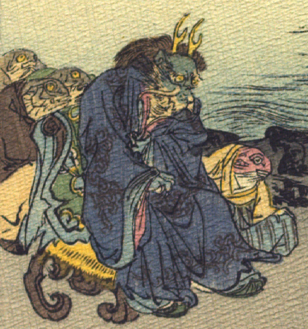

竜王とその側に控える魚の化物たち。竜王の頭部は緑色で、目玉は黄色くまるく、口元に長いひげが生えている。額に鹿のような黄色い角を生やし、後頭部から毛がもうもうと生えている。青い着物をまとい、靴をはいている。袖からのぞく手は青い。背に布をかけ、毛皮らしきものを敷いた椅子に腰掛けている。椅子の後ろに3体の魚が立って控えている。頭部は墨色で目玉は黄色く、手前の1体は黒い羽織と薄茶色の袴をまとっている。竜王の足元に頭部が赤い魚が座っている。黄色い着物と青い袴をまとい、片手を膝の上に置いている。
著作者：J.Dautremer／出典：親書誌：U426_nichibunken_0107：La meduse simple et naïve／日付：2006／資源識別子：U426_nichibunken_0107_0004_0001
Copyright (c)2010- International Research Center for Japanese Studies, Kyoto, Japan. All rights reserved.